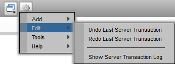
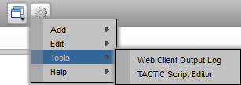
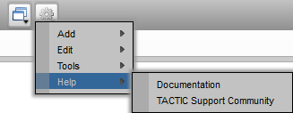
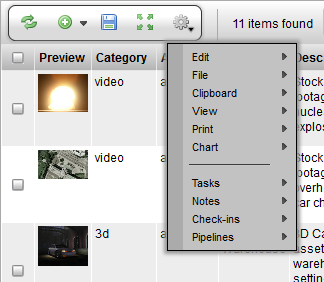
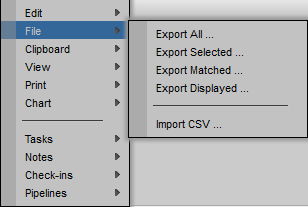
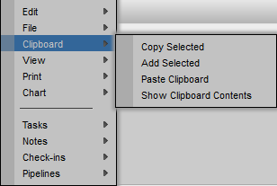
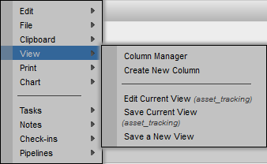
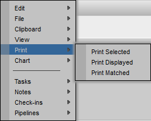
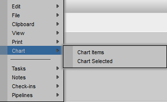
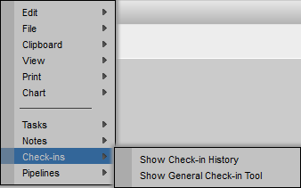

Top Gear Menu

Add

| Add New sType | Add a new sType to the schema. |
| Add New <...existing sType from schema...> | Open a new tab and pop-up a window to insert a new item of the existing sType from the schema. |
Edit

| Undo Last Server Transaction | Undo the last transaction. |
| Redo Last Server Transaction | Redo the last transaction. |
| Show Server Transaction Log | Display the Transaction Log in a pop-up. The log holds all the transactions since the creation of the project. |
Tools

| Web Client Output Log | Load the Web Client Output Log. This log details TACTIC output as well output from statements in scripts. |
| TACTIC Script Editor | Load the TACTIC Script Editor pop-up. |
Help

| Documentation | Open a new page to TACTIC's Documentation. |
| TACTIC Support Community | Open a new page to TACTIC's Support Site. |
Gear Menu for the View

Edit

| Retire Selected Items | Retire the selected items. Retired items are hidden from the view, but not removed from the database. |
| Delete Selected Items | Delete the selected items. Deleted items are removed from the database and are no longer available. |
| Undo Last Server Transaction | Undo the last transaction |
| Redo Last Server Transaction | Redo the last transaction |
| Show Server Transaction Log | Load the TACTIC Transaction Log. The Transaction Log holds all the transactions since creation of project. |
| Add Tasks to Selected | Add tasks to the selected items. |
| Add Tasks to Matched | Add tasks to the matched items. |
File

| Export All ... | Export all of the item in the view. |
| Export Selected ... | Export all of the selected items in the view. |
| Export Matched ... | Export all of the Matched items in the view. |
| Export Displayed ... | Export all of the displayed items in the view. |
| Import CSV ... | Import a CSV file. |
Clipboard

| Copy Selected | Copy the item that is selected in the view (indicated with a check mark) to the clipboard. |
| Add Selected | Add the item that is selected in the view to the list of items already on the clipboard. |
| Paste Clipboard | Paste the items from the clipboard to the current view. |
| Show Clipboard Contents | Display the contents of the clipboard in a pop-up window. |
View

| Column Manager | Pop-open the Column Manager. |
| Create New Column | Pop-open the Create New Column Window |
| Edit Current View | Edit the current view. |
| Save Current View | Save over the existing view with the current configuration. |
| Save a New View | Save the current view as a new view in the sidebar. |

| Print Selected | Print all the selected items in the view. |
| Print Displayed | Print all the displayed items in the view. |
| Print Matched | Print all the matched items from the search criteria. |
Chart

| Chart Items | Create a chart of displayed view. |
| Chart Selected | Create a chart of the selected items. |
Tasks

| Show Tasks | Add the Task Edit column to the view. |
| Add Tasks to Selected | For the items that are currently selected in the view, add tasks to them. |
| Add Tasks to Matched | For all the items returned by the search, add tasks to them. |
Notes

| Show Notes | Add the Notes column to the view. |
Check-ins

| Show Check-in History | Add the Checkin History column to the view. |
| Show General Check-in Tool | Add the General Check-in Tool as a column to the view. |
Pipelines

| Show Pipeline Code | Add the Pipeline Code column to the view. |
| Edit Pipelines | Open the Workflow Editor in a new tab. |